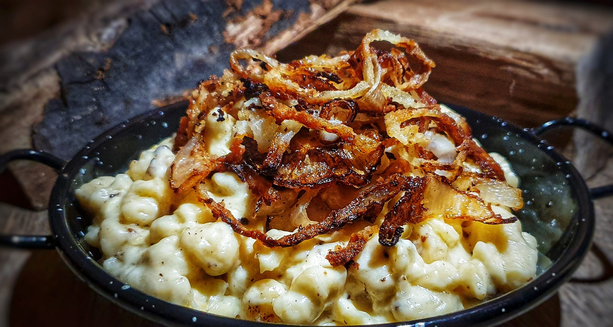

Zurück
Käsespätzle

Beschreibung
Käsespätzle sind ein herzhaftes Wohlfühlgericht aus dem Alpenraum – zarte Spätzle, geschmolzener Käse und knusprige Röstzwiebeln sorgen für puren Genuss!
Zutaten
- 500g Mehl
- 6Stk Eier
- 150ml Milch
- Prise Salz und Pfeffer
- Prise Muskat
- 1EL Butter
- 1Stk Zwiebel
- 250g Bergkäse (gerieben)
- 150g Rässkäse oder Emmentaler (gerieben)
- Etwas Schnittlauch
Schritte
- Für die Käsespätzle das Mehl, Eier und Milch in einer Schüssel mit dem Kochlöffel vermischen (muss nicht wirklich glatt sein) - der Teig sollte zähflüssig sein. Ist der Teig zu fest, kann man noch ein wenig Wasser hinzufügen.
- Nun noch Salz, Pfeffer und Muskatnuss zum Teig hinzufügen, gut verrühren und für ca. 10 Minuten ruhen lassen.
- In der Zwischenzeit die Zwiebel schälen und in feine Ringe schneiden. Dann Butter in einer Pfanne erhitzen und die Zwiebelringe darin goldbraun braten.
- Jetzt den Teig durch das Spätzlesieb in kochendes Salzwasser (großer Topf) durchlassen, einmal aufkochen und mit einem Lochsieb abschöpfen - sobald die Spätzle an der Wasseroberfläche schwimmen. In eine Schüssel geben (dabei ist es kein Problem wenn ein wenig "Spätzlewasser" mitgeschöpft wird).
- Sofort den geriebenen Käse dazugeben und mit dem Kochlöffel durchmischen - der Käse sollte durch die noch heißen Spätzle ein wenig schmelzen und "Fäden" ziehen.
- Zum Schluss die Spätzle auf Tellern anrichten und mit den gebratenen Zwiebeln und gehacktem Schnittlauch garnieren.